Audition au poste de maître de conférences n°4730
Alba Marina Málaga Sabogal
25 mai 2020
Parcours
Enseignement, Recherche, Développement, Médiation
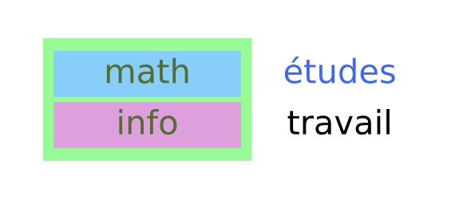
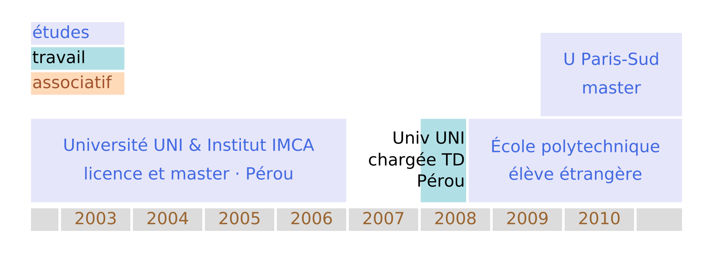
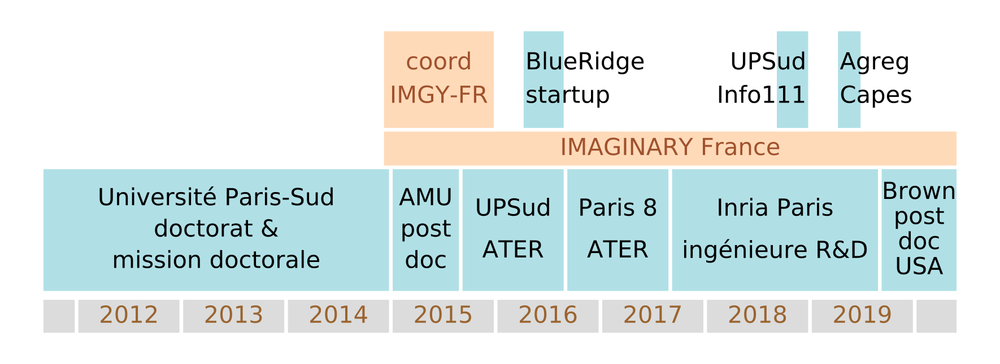
Recherche
Mes mentors au fil du temps
J’ai bénéficié de l’encadrement des personnes suivantes: stages de deuxième et troisième année à l’École polytechnique, et M2 et thèse à Orsay et des mentors suivants pour mes postdocs à Marseille et à Providence aux États-Unis.
| 2010-2011 |
Projet encadré 2A X |
Gilles Courtois |
| 2011 |
Stage de recherche 3A X |
Vadim Lyubashevsky |
| 2011 |
Stage de recherche M2 |
Sylvie Ruette |
| 2011-2014 |
Thèse doctorale |
Jean-Christophe Yoccoz |
| 2015 |
Post-doctorat |
Alexander Bufetov |
| 2019-2020 |
Post-doctorat |
Rich Schwartz |
Depuis 2015 j’ai une collaboration suivie avec Serge Troubetzkoy sur la dynamique de surfaces de translation de mesure infinie.
Les systèmes dynamiques
- Évolution déterministe à court terme, qu’on connaît.
- On se pose des questions concernant l’évolution à long terme.
Exemple: les rotations du cercle
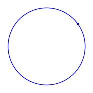
Thm: (Poincaré) Une rotation du cercle est périodique si et seulement si elle est rationnelle. Sinon, elle est ergodique.
Exemple: le flot linéaire sur un tore plat
Qu’est-ce qu’un tore ?
 \({}\) \({}\) \({}\)
\({}\) \({}\) \({}\)
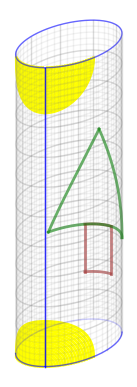
\({}\) \({}\) \({}\) 
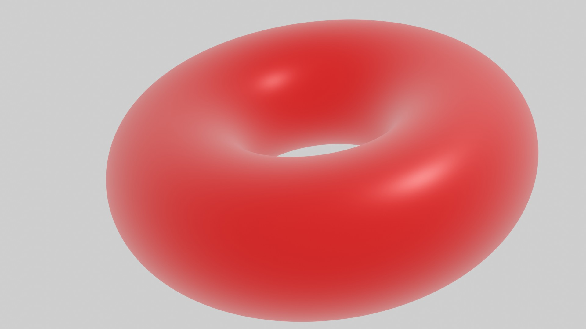

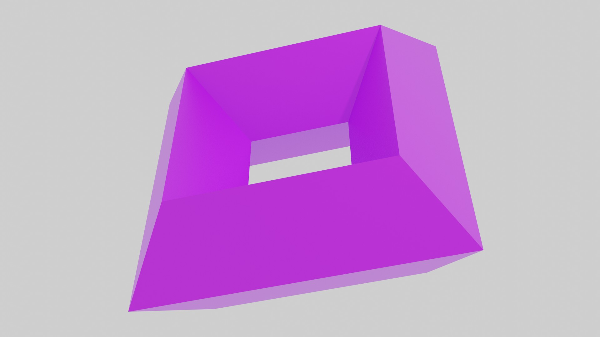
Retour aux rotations du cercle
 \({}\) \({}\) \({}\)
\({}\) \({}\) \({}\)
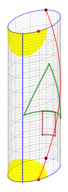
\({}\) \({}\) \({}\) 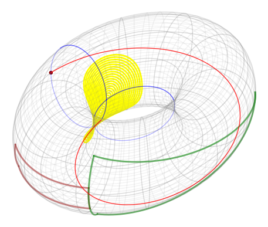
Exemple: les billards
Extrait du film “Secrets of the Surface” de Csicsery, comme les autres images et animations de Andrea Hale à suivre.
Le dépliage des billards
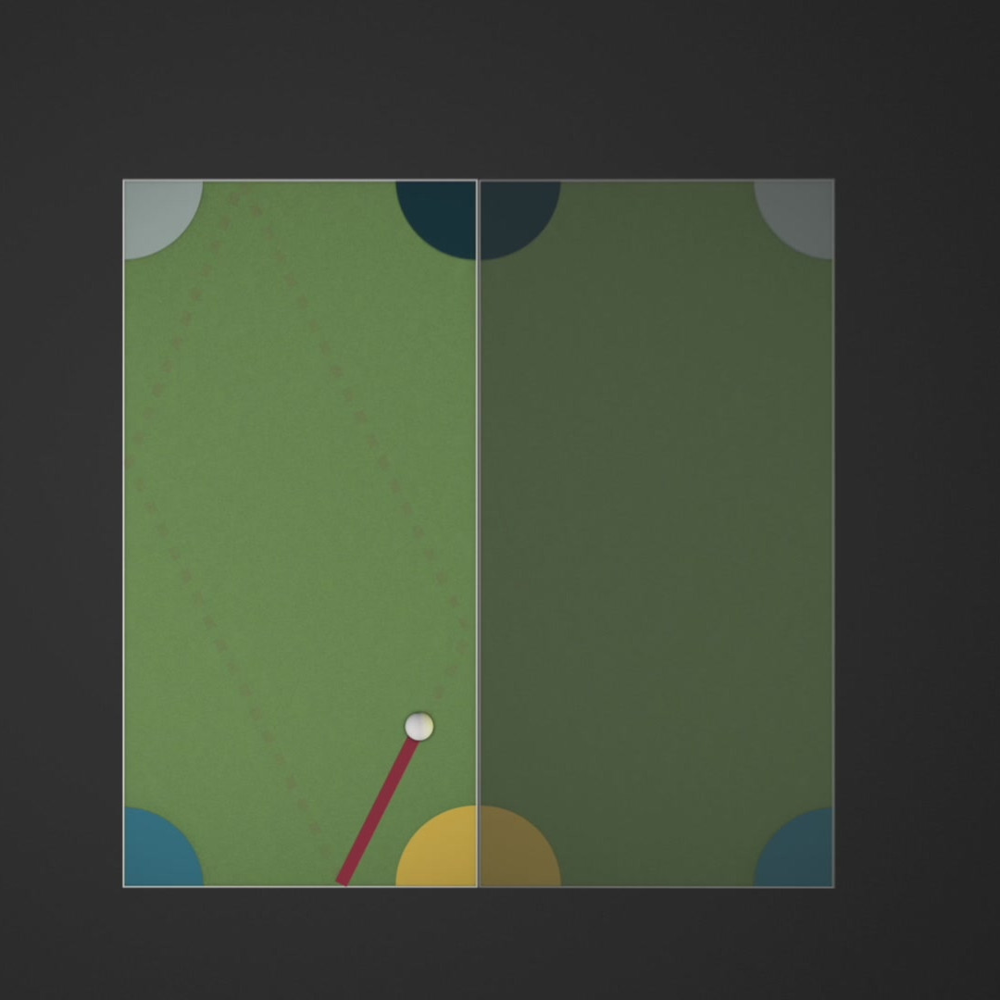
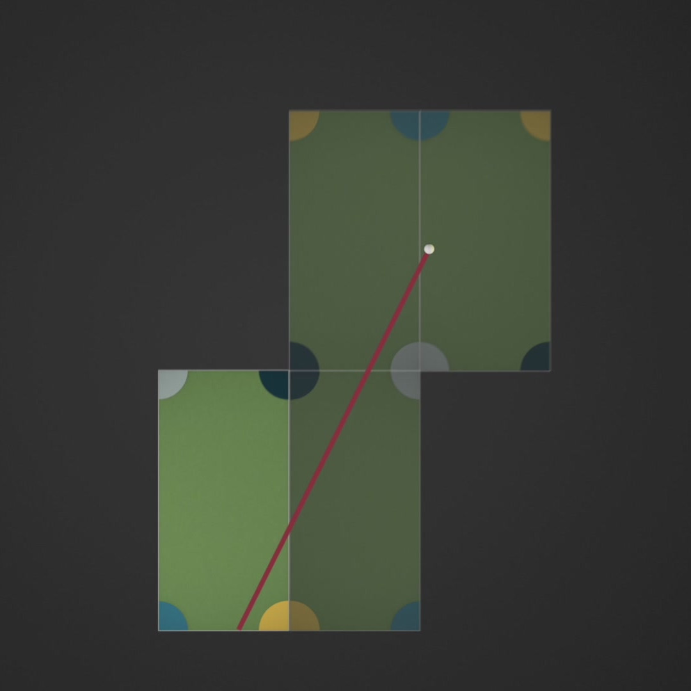
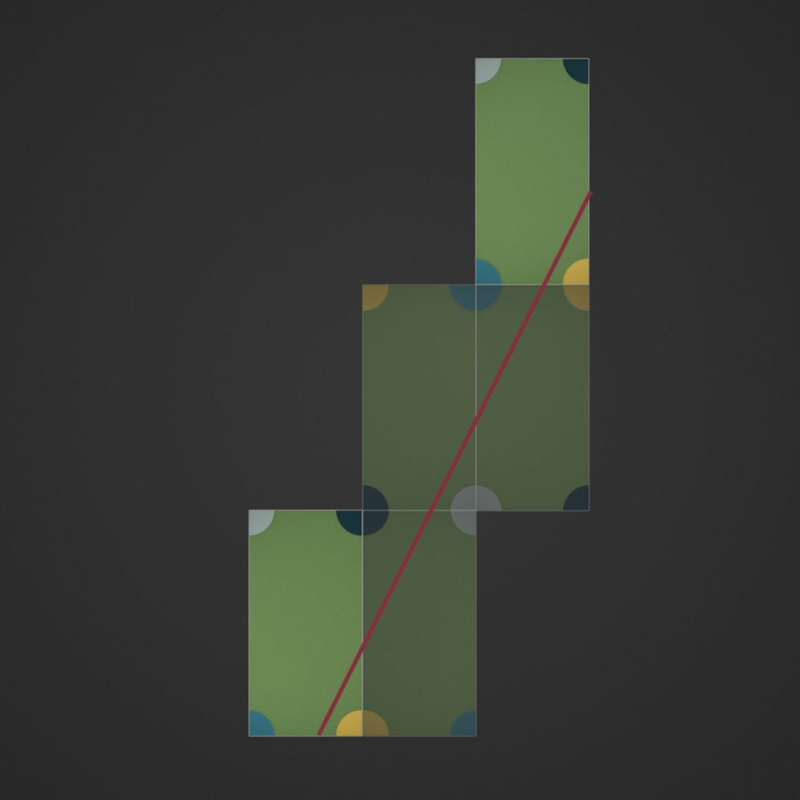
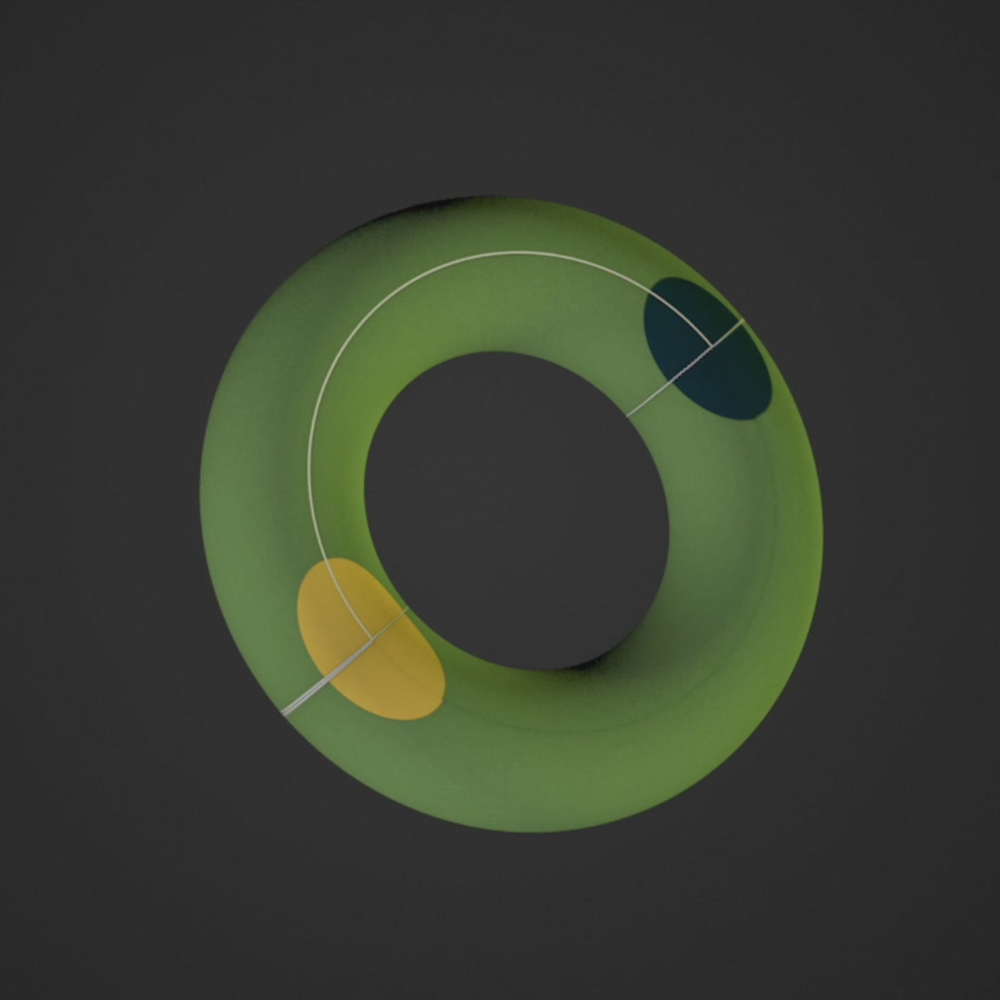

Surfaces de translation et billards «infinis»
Le dépliage d’un billard irrationnel est une surface de genre infini.
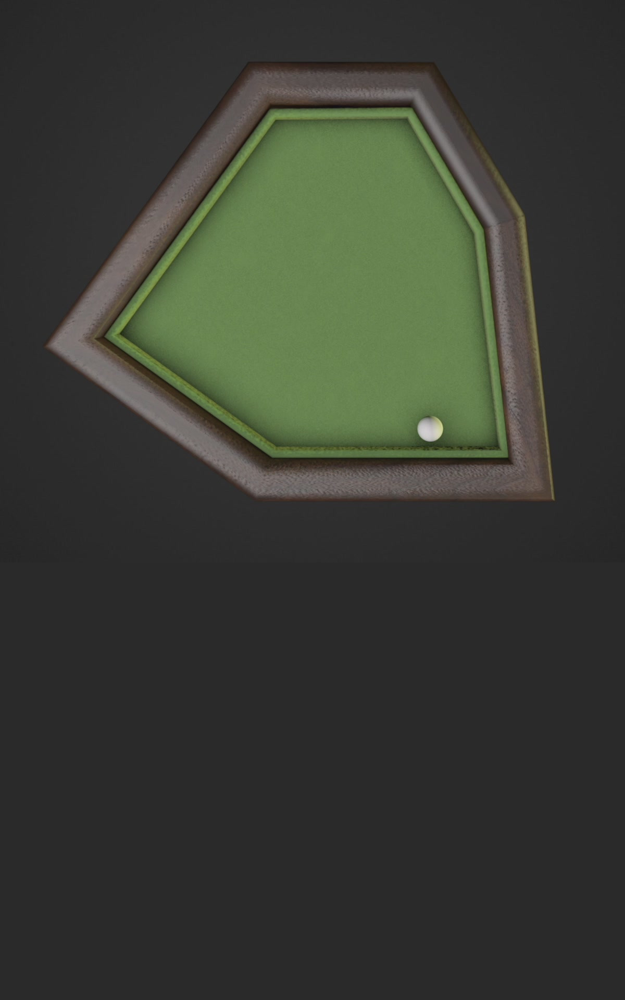
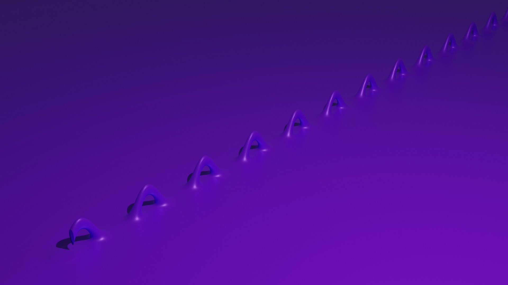
Résultats
Thm (MS, 2014) Si l’on fixe une direction dans le plan alors la dynamique d’un escalier générique dans cette direction est conservative, minimale et ergodique.
Thm: (MS & Troubetzkoy, 2015) Génériquement, la dynamique du wind-tree est minimale dans un large ensemble de directions.
Thm: (MS & Troubetzkoy, 2016) Génériquement, la dynamique du wind-tree dans presque toute direction est ergodique.
Thm: (MS & Troubetzkoy, 2016) La dynamique d’un billard VH est faiblement mélangeante dans un ensemble large de directions.
Thm: (MS & Troubetzkoy, 2017) Génériquement, la dynamique du wind-tree est d’indice ergodique infini dans un large ensemble de directions.
Thm: (MS & Troubetzkoy, 2019) Génériquement, la dynamique des surfaces en escalier est uniquement ergodique dans un large ensemble de directions.
Thm: (MS & Troubetzkoy, 2019) Génériquement, la dynamique du wind-tree est uniquement ergodique dans un large ensemble de directions.
Publications
Alba Málaga Sabogal, Serge Troubetzkoy (2016)
“Minimality of the Ehrenfest wind-tree model”
Journal of modern dynamics 10 (209-228)
Alba Málaga Sabogal, Serge Troubetzkoy (2016)
“Ergodicity of the Ehrenfest wind–tree model”
Comptes rendus mathématique 354:10 (1032-1036)
Alba Málaga Sabogal, Serge Troubetzkoy (2017)
“Weakly mixing polygonal billiards”
Bull. London Math. Soc. 49 (141-147)
Alba Málaga Sabogal, Serge Troubetzkoy (2018)
“Infinite ergodic index of the Ehrenfest wind-tree model”
Commun. Math. Phys. 358 (995–1006)
Alba Málaga Sabogal, Serge Troubetzkoy (2019)
“Unique ergodicity of infinite area translation surfaces”
Prépublication
Les Ehrenfest

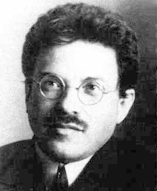
Application à la conjecture des Ehrenfest (1912)
Corollaire (de MS & Troubetzkoy, 2018) La conjecture des Ehrenfest est satisfaite par un wind-tree générique lorsque la fréquence des directions est calculée sur un domaine de mesure finie (mais arbitrairement grande).
Enseignements
Expérience d’enseignement
| 2018-2019 |
Paris-Saclay, 60h |
info |
|
| 2016-2017 |
Paris 8, 192h |
info |
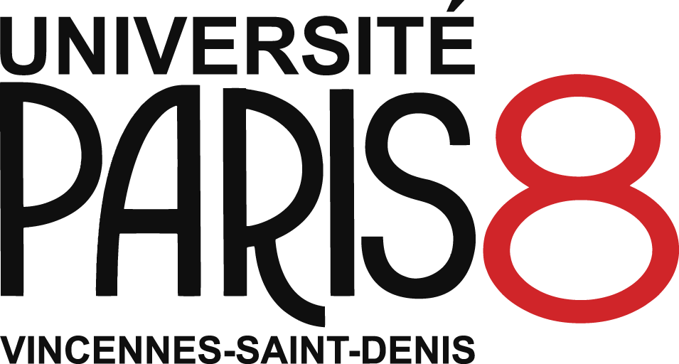 |
|
|
L2 MIASHS |
Math. numériques |
| 2015-2016 |
Paris-Sud, 192h |
math |
|
|
|
L3 BS, C |
Équa. diff. |
|
|
L1 MPI |
Algèbre linéaire |
|
|
PCSO |
Géométrie, Analyse |
| 2014 |
Paris-Sud, 96h |
math |
 |
|
|
L2 BC |
Équa. diff. |
| 2008 |
UNI Lima, 192h |
math |
 |
|
|
L2 M |
Algèbre linéaire |
|
|
L1 MPC |
Calcul vectoriel |
>600h dont 192h responsable de cours
Cours, cours intégrés, TD
- Équations différentielles
- Mathématiques numériques avec Python
- Calculus
- Analyse
- Calcul formel avec SageMath
- Structures algébriques
- CMS avec Wordpress
- Algèbre linéaire
- Calcul vectoriel
- Calcul intégral
- Programmation orientée objet avec Java
- Introduction à l’informatique avec C++
Facultés d’adaptation
Programme du lycée très différent du mien
- j’ai étudié les programmes (EduScol)
Cours de maths numériques sans ordinateurs
- Python sur smartphone (console Android)
Étudiants d’origines diverses
- je peux enseigner en français, anglais, espagnol, polonais
…
Cours de mathématiques à la FSEG
Licence: bases mathématiques de la modélisation économique et de la gestion.
| Parcours Amenagé |
Mathématiques |
|
Statistiques descriptives I |
| L1 |
Mathématiques |
|
Statistiques et outils informatiques I |
| Passerelle |
Outils mathématiques |
|
Statistiques descriptives sur Excel |
| L2 |
Mathématiques |
|
Probabilités, estimation et tests |
| L3 |
Mathématiques des systèmes dynamiques |
|
Processus stochastiques en finance |
|
Optimisation dynamique |
Master: science des données, apprentissage automatique, …
Future adaptation à la FSEG ?1
- je connais déjà Python et R
- j’ai enseigné les équations différentielles dans divers parcours
- j’ai déjà fait de l’apprentissage machine
- je pourrai apprendre Stata, SAS
- intérêt personnel pour l’économie qualitative et quantitative:
- parmi mes lectures: Jean Tirolé, Anne Duflo, Joseph Stiglitz, …
- apprendre tout au long de la vie, c’est ma devise
- idées de projets avec des étudiants en économie
Idées de projets avec des étudiants en économie
- "Les grands perdants du Covid-19: les exodes urbains-ruraux en 2020"
- "Les poinçonneuses numériques: quel impact ont les outils modernes de suivi du temps sur le revenu des travailleurs indépendants ?"
- "Fiabilité des recensements de population universel versus les recensements randomisés"
- "Les résultats Pisa et les politiques éducatives dans les pays de l'OCDE"
- "Le transport public: pourquoi la mise en place de navettes/bus/trains gratuits n'éliminera pas l'usage de la voiture"
Conclusion
Pour finir…
| parcours polyvalent |
un vrai souci de l’accessibilité |
fibre “maker” |
| intérêt en médiation scientifique |
enseignement dans le respect |
continuité dans la recherche |
J’aimerais beaucoup travailler avec vous.
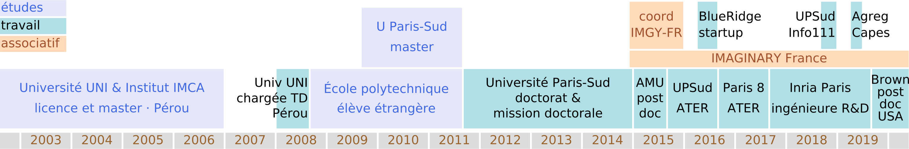